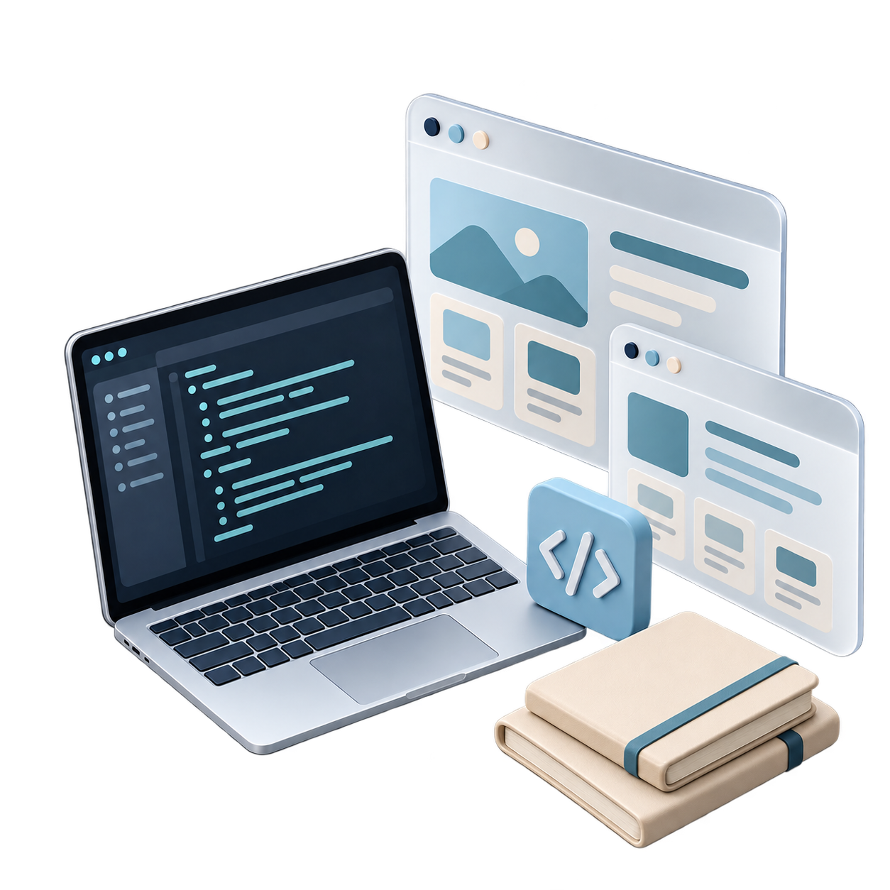

WordPress Websites
Responsive pages built around your brand, your content and your visitors.
↗HELLO, I'M
I build responsive, multilingual WordPress websites that are easy to use and maintain — from custom layouts to performance improvements and ongoing website care.
ABOUT ME
I'm a WordPress Developer based in Bali, building and maintaining websites for hospitality, wellness and service businesses. My work covers custom layouts, multilingual content, performance improvements and day-to-day technical care.
I combine WordPress development with HTML, CSS, JavaScript, PHP and MySQL to turn client ideas into clear, user-friendly websites. My background also includes Laravel development and teaching coding.
Explore my journey ↗WHAT I DO
Responsive pages built around your brand, your content and your visitors.
↗Thoughtful interfaces that bring design and functionality together.
↗Plugin updates, backups, security monitoring, and fixes for layout errors, plugin conflicts and malware.
↗Multilingual setup, responsive layouts, speed improvements and basic SEO tailored to client needs.
↗THE TOOLKIT
Also experienced with Bootstrap, Laravel and basic Python. Strengths: logical thinking, leadership, teamwork, integrity, project management, problem solving and time management.
FEATURED PROJECTS
Explore by industry
MY APPROACH
The brand, the audience and what the website needs to do.
Clear content and intuitive paths through every page.
Responsive implementation with attention to the details.
Check layouts, interactions and performance across screens.
Keep the website useful and manageable after launch.
WORK EXPERIENCE

SEO Boost Indonesia · On-site
Developing and customising WordPress websites with Elementor, Bricks and Avada. Creating responsive layouts, improving speed and basic SEO, and maintaining plugins, backups and security.
Resolving layout errors, plugin conflicts and malware issues while adapting site structure to client needs.
Algorithmics Global
Taught Scratch Jr and Scratch to children aged 5–12, and Python to teens. Created learning activities and progress reports, helping students develop logic and problem-solving skills through projects.
Inkubator Bisnis ITB STIKOM · On-site
Developed a web-based tenant registration system with Laravel, Bootstrap and MySQL, including data export features for administration and reporting.
EDUCATION & CERTIFICATIONS
Institut Teknologi dan Bisnis STIKOM BALI
Denpasar, Bali
HELP University
Kuala Lumpur, Malaysia
Listening and Reading Test (2024)
Advance Diploma in English Language Training — NIIT (2019)
LET'S CONNECT
WordPress websites, redesigns,
technical care and new ideas.
LET’S BUILD SOMETHING
Your next website
starts with a hello.